蛇信仰にまつわるエトセトラ；その2/宮崎県
宮崎の蛇信仰、お次は霞神社に向かうとしよう。
霞神社は古い歴史を持ち、山岳信仰の修験や島津家ともかかわりの深い神社である。
山頂の岩の割れ目に白蛇が住んでいて、霧島山周辺の六つの神社である霧島六所権現の使いの神とされているのだという。
そんな霧島山の山岳信仰の重要地点であり、この地方の蛇信仰の中心地なのである。
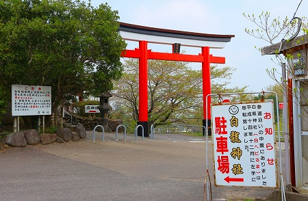
赤い鳥居をくぐるとその先は緩やかながらも延々と上り坂が続く。
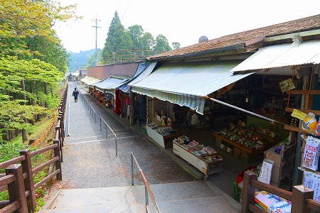
山の上に赤い部分が見える。あそこまで行くのかー。
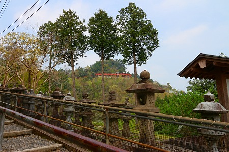
そんなこんなで本殿に到着。
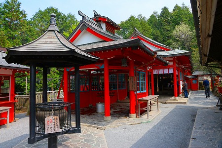
案外こじんまりした神社であったが参拝客は少なくない。
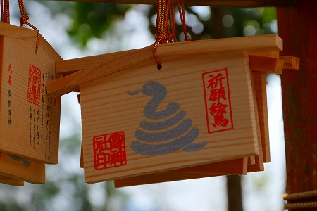
絵馬も蛇ですな。
本殿の裏手に白蛇がいるという石厳がある。
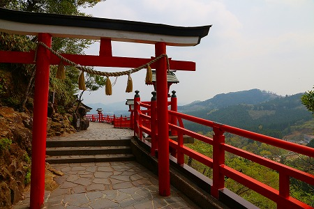
おおお、これか！
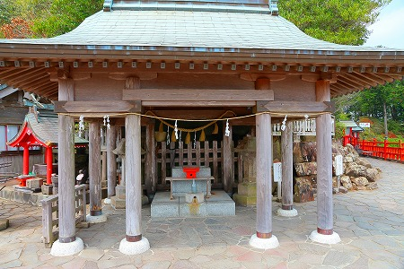
周辺には何故か牛の奉納物が多かった。
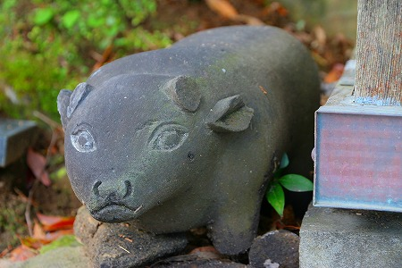
蛇の置物ならともかく何で牛？
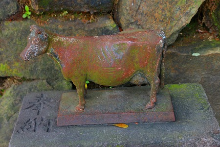
…と思ったら畜産の神様として霊験あらたかなんだって。
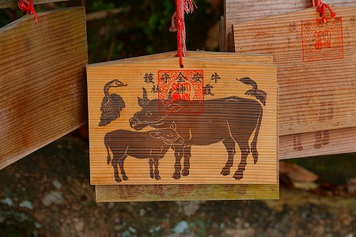
さて。肝心の白蛇様である。
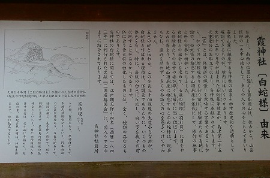
説明書きによれば岩のすきまに30cmほどの蛇がいるのだとか。
天保14年に刊行された「三国名勝図会」のイラストも添えられている。
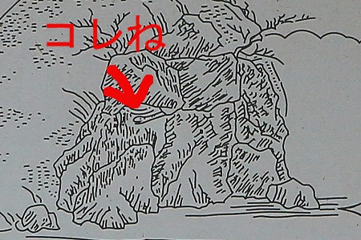
この蛇を見れば幸福になれるわけですな！
というわけで岩のすきまのあちこちをくまなくチェック。
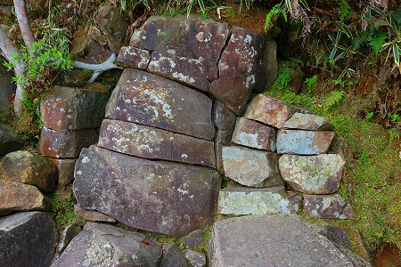
…いくら探してもいないぞ…
周囲を見渡せば私と同じように大勢の参拝客が岩のすきまを覗き込み必死に蛇を探している。
勿論みなさん見つからない。
ま、天保年間の蛇のハナシだし、仕方ないか。
…と、気を取り直して再び鳥居のあるところまで戻ってくる。
…実は先ほどから気になって仕方が無かったのだが、鳥居周辺のあちこちにこんな看板が掲げられまくり。
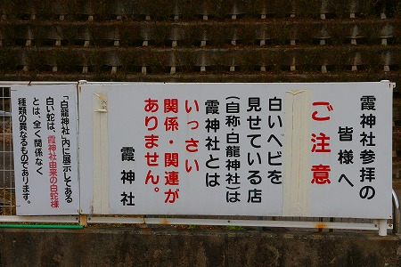
…かなり胡散臭そう。
でも、どっちかというと本家の霞神社よりも俄然面白そうじゃないか！
ネガキャンが往々にして逆の効果を生む典型である。
というわけで霞神社の鳥居の脇の白龍神社へ行ってみる。
この神社、かつては参道沿いにあったのだが、「何らかの理由」で移転したらしい。
まあ、何となく理由は想像できるが、ここで憶測を挟むのは止めておこう。
ここの売りは何といってもリアルに白蛇を見れること。
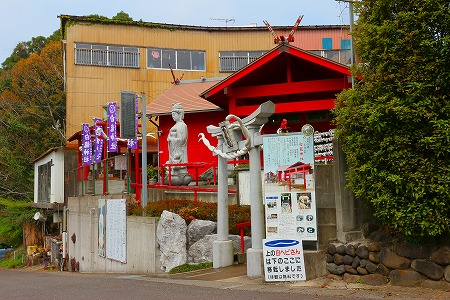
周囲にはたくさんの看板が並び、宣伝に余念がない。
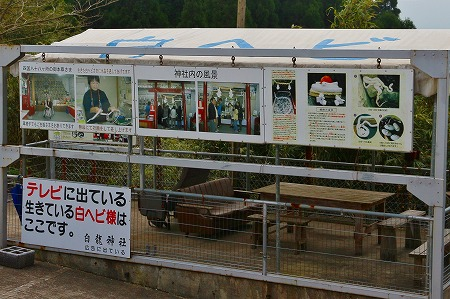
そしてインディーズ神社の切り札、テレビに出てますアピール。
日本全国に白蛇を神（の使い）として祀る神社は多いが、往々にして金運上昇を祈願するところが多い。
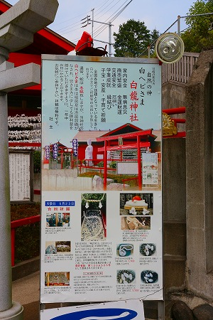 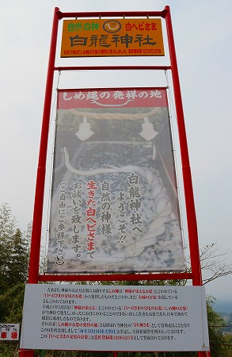
ココの説明によると蛇が交尾をしている姿が注連縄の原点なんだとか。
そして平成11年にこの神社にて2匹の白蛇が交尾した姿を日本で初めて撮影に成功したのを記念して注連縄発祥の地と自称するようになったのだとか。
大丈夫ですか？皆さんついて来てます？俺は一杯一杯です。！
というわけでこの神社、今では白蛇交尾の姿を意匠登録までしているのだとか。
…まさか今後日本中の注連縄を張ってある神社にパテント料を請求するんじゃなかろうな…
霞神社からの嫌われっぷり、注連縄発祥の地とか言い張るロジック、本当に大丈夫なんだろうか…
一抹の不安を抱きつつ、境内に入ってみる。
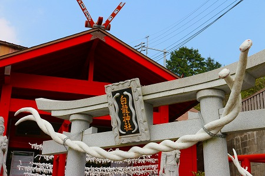
神社なのに観音像が並んでいる。神仏習合スタイルの神社なのだ。
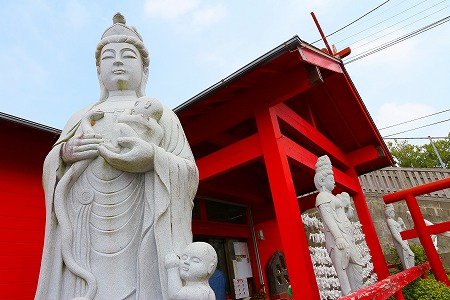
交尾した白蛇が注連縄のように鳥居に架かっている。
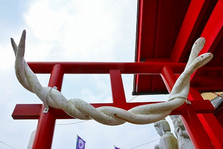
いや、「注連縄のように」は正しくないな。
注連縄が蛇の交尾を模したものなのでしたね…。
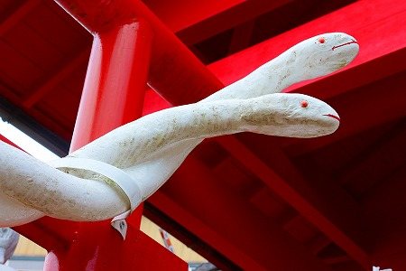
よく見ると蛇の顔がカワイイ。
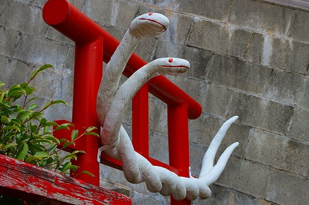
鳥居の白蛇の上には金色の扁額が。
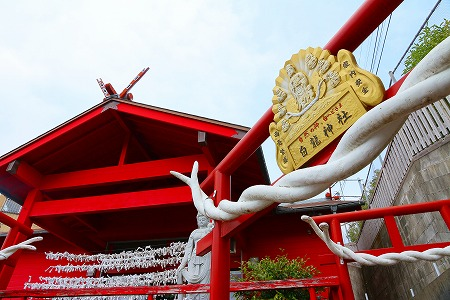
よく見ればエビスさんの顔なのか？これ。
…というわけで中に入る。
最初は四国八十八ヶ所の写し本尊が並んだコーナー。
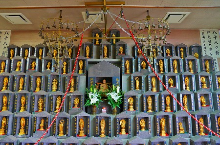
コレ、手前の紅白の紐を引っ張ると八十八個の鐘が鳴る仕組みになっている。
単純そうに見えて意外とよく出来ているのだ。
待ってましたとばかりにマシンガントークをかまされる、と思っていたが案外そうでもない様子。
というわけでガラスケースに入った白蛇様に謁見。
折角なのでお守りを買ってみると、食器入れのケースにしろ蛇様を移してお守りをその中に突っ込んでくれた。
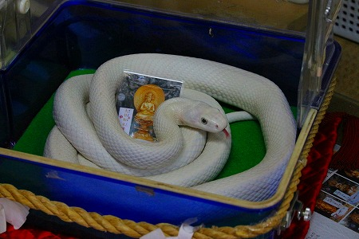
おばちゃんが祝詞を唱えている間、白蛇様はチロチロっと赤い舌を出して落ち着いた様子。
この蛇、やけに白すぎるよなあ。
実際薬品で脱色して天然の白蛇だと言って祀ってる神社もあるという話も聞いたことあるけど、ここのはどうなんだろうなあ〜。
…などと思いつつおばちゃんの祝詞をぼんやり聞いていた。
次におばちゃん、手の平を出せという。
すると手の上に白蛇様を乗せるではないか！
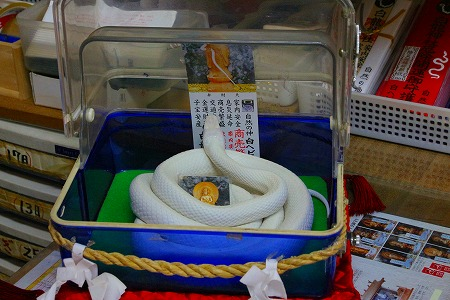
…今まで黙っていたけど小生蛇が大の苦手なのです。
子供の頃、買ってもらったばかりの自転車で蛇を踏んでしまい、暴れた蛇が車輪に巻き込まれて閲覧注意レベルの大惨事になって以来、一番苦手な生き物になってしまったのだ。
そんな蛇が今まさに手の上に鎮座しちゃってるじゃないの！
いや、。これも金運向上のため。ぐっと我慢せねば。
…と思ってたらおばちゃんの携帯が鳴り、話しながら奥の部屋に引っ込んでしまった。
おい、チョット待て。
白蛇様そのまんまなんですけど。
わわわ。どうしよう！
そのまま手から下ろすとどこかに逃げていってしまいそうだし、そもそも動かしたらアクティブモードオンになってしまいそう。
アクティブモードオンな蛇ほど恐ろしいものはない。なるべく白蛇様を刺激せず、手の上でリラックスしていただくしかない。
じっとりと汗ばむ手の平。あ、温度が上がるとアクティブになるんだっけ、変温動物って！
静まれ、静まれ、俺の手の平の温度。
文字通り蛇に睨まれた蛙のごとく微動だに出来ないのであった。
しかもおばちゃん、近所のダレソレが風邪でどうのこうのでなんとかかんとか、というハナシを延々としている。
こっちは白蛇様をずっと持ってるんですけどー、何とかしてくれよ。
…という俺の魂の叫びは一切シカト、話題はダレソレの息子の受験の話にシフトしている。
すいませ〜ん、受験の話も結構なんですけど、こっちは失神寸前なんですけど〜！
人間慣れしているのか、白蛇様は手の平の上にいてもおとなしい。
時折赤い舌をチロチロっとする度に脂汗タラリ状態。
一体どうしたものやら。
…と、しばらくしてやっとおばちゃんが戻ってきた。
生まれてこの方、こんな長い時間蛇に触っていたことなどないぞ。ありがたいんだかありがたくないんだか。
ちなみに、この白蛇様とのディープな接触後、金運がアップしたかといえば…
特に思い当たる節はないですねえ〜。
というわけで、自分なりにはかなり頑張ってゲットした御札を胸に参拝完了！
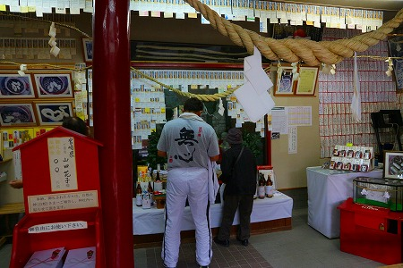
後から来られた方、メチャ熱心に白蛇様を拝んでました。
背中の「無心」というプリントとは裏腹にかなり切羽詰った感じでした。
声を掛けるのも躊躇する感じ。一体何があったんでしょう…。
境内の片隅には小さな祠が。
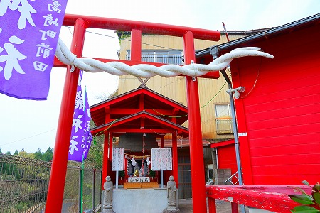
神米を持って帰るといいことがあるらしいので、少し頂いてみた。
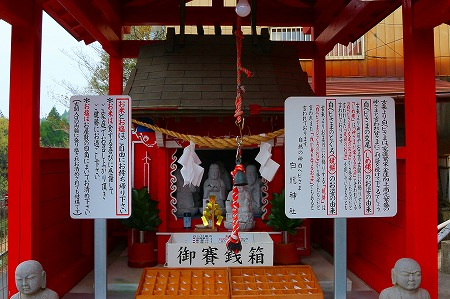
結論としては…特に思い当たる節はないのだが、まあきっと知らないところで何らかの利益があったのだろうな。
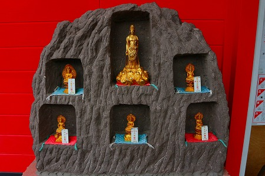
最早何で神社に仏像があるの？とかそういうのはどうでも良くなってます。
白蛇信仰の本家、霞神社には相当ディスられてるけど結構楽しめたから、まあ、良しとするか。
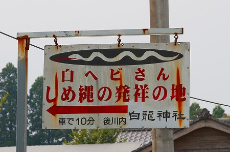
結局、これだけ白蛇白蛇と騒いでる割に実際に白蛇見て触ったのはココだけだし。
2013.03.
珍寺大道場 HOME